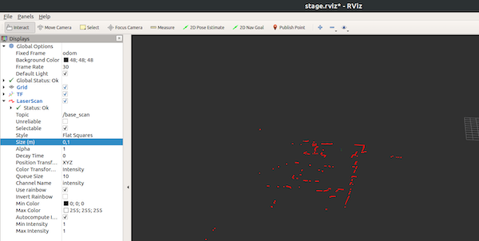

Simulation in ROS
Gazebo Simulator
Gazebo is a 3D simulator. It makes it possible to rapidly test algorithms, design robots, perform regression testing, and train AI system using realistic scenarios. Gazebo is integrated with ROS (cf. Gazebo ROS) and supports various robots out of the box.
Gazebo is heavily used by the DARPA challenges (cf. Wikipedia). You can see videos online (example) and even load the maps and robot model that are available.
Gazebo Installation
Verify that Gazebo is installed.
$ dpkg -l | grep gazebo
ii gazebo11 11.12.0-1~focal amd64 Open Source Robotics Simulator
ii gazebo11-common 11.12.0-1~focal all Open Source Robotics Simulator - Shared files
ii gazebo11-plugin-base 11.12.0-1~focal amd64 Open Source Robotics Simulator - base plug-ins
ii libgazebo11:amd64 11.12.0-1~focal amd64 Open Source Robotics Simulator - shared library
ii libgazebo11-dev:amd64 11.12.0-1~focal amd64 Open Source Robotics Simulator - Development Files
ii ros-iron-gazebo-dev 3.5.3-1focal.20220829.174620 amd64 Provides a cmake config for the default version of Gazebo for the ROS distribution.
ii ros-iron-gazebo-msgs 3.5.3-1focal.20221012.224922 amd64 Message and service data structures for interacting with Gazebo from ROS2.
ii ros-iron-gazebo-plugins 3.5.3-1focal.20221021.150213 amd64 Robot-independent Gazebo plugins for sensors, motors and dynamic reconfigurable components.
ii ros-iron-gazebo-ros 3.5.3-1focal.20221013.010602 amd64 Utilities to interface with Gazebo through ROS.
To notice that you can install missing packages with the command line: sudo apt install <pakage_name>.
Install larm_material ROS1 packages
The better way to use Gazebo with ROS is to launch the simulator using ROS launch files. LARM Material is a git repository containing ROS1 resources for this lecture and therefore already done launch files.
{% hint style="warning" %}
In this lecture, we will still a ROS1 environment to launch Gazebo because the tbot simulated model is not yet ready for ROS2.
Cloning and installing the larm_material repository:
#ensure ros1_ws catkin workspace is created
mkdir -p ~/ros1_ws/src
cd ~/ros1_ws/src
# clone the LARM repo
git clone https://bitbucket.org/imt-mobisyst/larm_material.git
# compile
cd ~/ros1_ws
catkin_make
# let your shell know about new ROS packages
source devel/setup.bash
Launch your first Gazebo Simulation
Finally you can launch a preconfigured simulation:
$ rosify1 # cf. FAQ to have the rosify1 shell command
(ros1) $ roslaunch larm challenge-1.launch
Look at the content of this launch file here.
We can see that Gazebo/ROS supports loading a world file describing the simulation environment and spawn elements such as robots.
This simulation spawns a robot configured like a tbot i.e. it is equipped with a laser range finder and a camera.
The interaction with the simulation will operate through ROS topics as it would be with a real robot with real equipments.
Try to list and explore the different topics in a new terminal:
(ros1) $ rostopic list
(ros1) $ rostopic info <topic_name>
...
Question: In which topic are laser scans published ? and camera images ?
Connect to ROS2 and Visualize
Topics, like the other tools of ROS, has evolved from ROS1 to ROS2. This evolution makes them incompatible, but it is possble to start a bridge node to transfer information from ROS1 to ROS2 and vise-versa.
The ROS1_bridge (a ros2 package) with its dynamic_bridge listen to connection to topics and transfers the data.
Then, Rviz2 will be capable of reading and showing the data simulated by Gazebo.
rviz2 is a very useful and versatile tool to visualize data that goes through topics.
Start the dynamic bridge, Rviz2 and visualize the laser scan data, and the camera data.
Frame and transformations
Test the main ROS2 GUI tools Rviz and Rqt (in new terminals):
Configure rviz2 to visualize the laser scans.
Be carreful, ensure that Global Option / Fixed frame is correctly configured to base_link.
Question: why is this important? (hint: check your
tfusingros2 run tf_tools view_frames.py)

Use rqt to see the graph of ROS nodes and the topics they use to communicate (ref of ROS Qt: RQt).
Controlling the Simulated Robot
Launch a simple node to control a robot using keyboard:
rosify2
ros2 run teleop_twist_keyboard teleop_twist_keyboard
Why can't you control the robot ?
Use the tbot_pytool multiplexer and command the robot from the /multi/cmd_teleop topic.
# First terminal:
ros2 run tbot_pytool multiplexer
# Second terminal:
ros2 run teleop_twist_keyboard teleop_twist_keyboard --ros-args --remap /cmd_vel:=/multi/cmd_teleop
How many terminals are open ?
tuto_sim
Create a new package (python or cmake as you want) tuto_sim in your ROS2 workspace and create a launch file that starts with the apropriate configration: the dynamic_bridge, rviz2, multiplexer and the teleop.
All the information you need are in the tutorials on docs.ros.org.